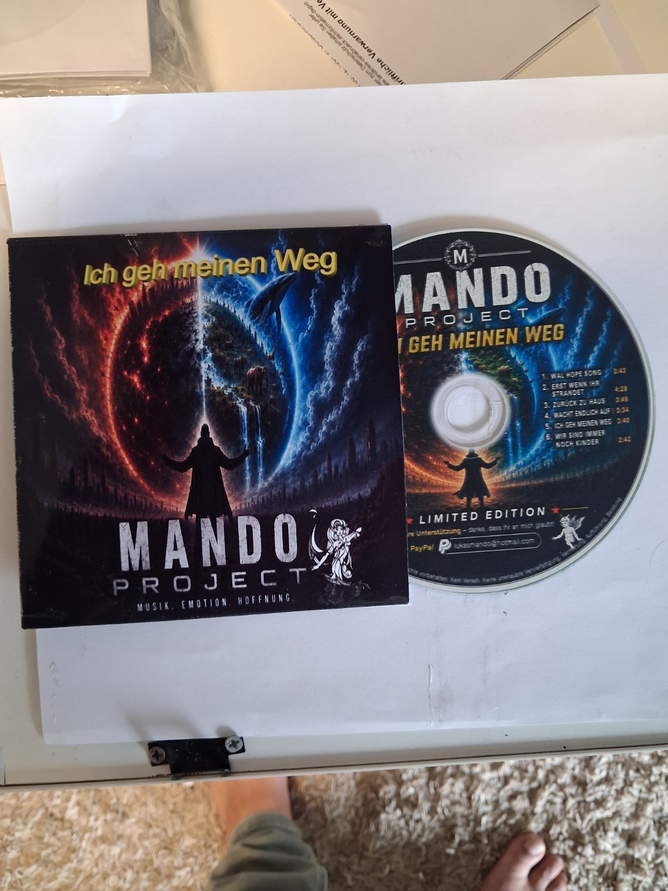
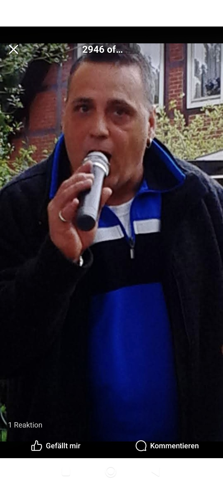
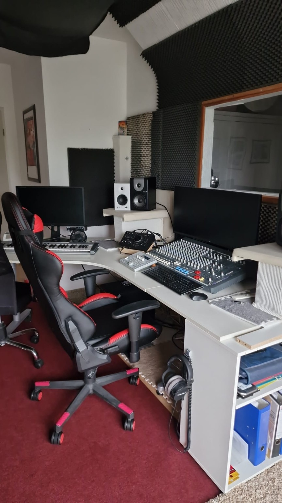

Originalcover auf der Musikplattform ansehen
♫
♫
03.04.2026
Geschichten über Hoffnung, Mut und den eigenen Weg.
Musik entdecken ↓MANDO PROJECT
Die Hope-Reihe und weitere persönliche Songs. Bei Veröffentlichungen ohne hier gespeicherte Originalcover führen die Links direkt zu den Musikplattformen.

DER WEG ZUR MUSIK

Von den Anfängen als DJ über Foxhelden 2.0 und die Soloveröffentlichungen als Lukas Mando bis zu Mando Project: Musik begleitet meinen Weg seit vielen Jahren.
Zu den früheren Titeln gehören „Träume werden wahr“, „Verrücktes Leben“, „Lichter der Nacht“ und „Kalt wie Eis“.
„Ich geh meinen Weg“ erzählt von einer Kindheit ohne den nötigen Halt und davon, wie die Musik zur eigenen Stärke wurde. Die offizielle Singleveröffentlichung ist noch geplant.
MEIN KREATIVER RAUM

Hier entstehen Pop-, Party- und emotionale Songs – von der ersten Idee bis zur fertigen Produktion.
BLEIB IN VERBINDUNG